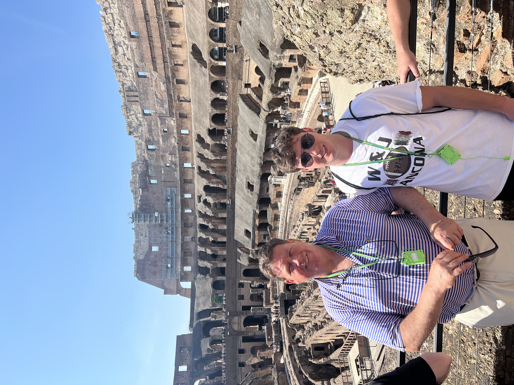
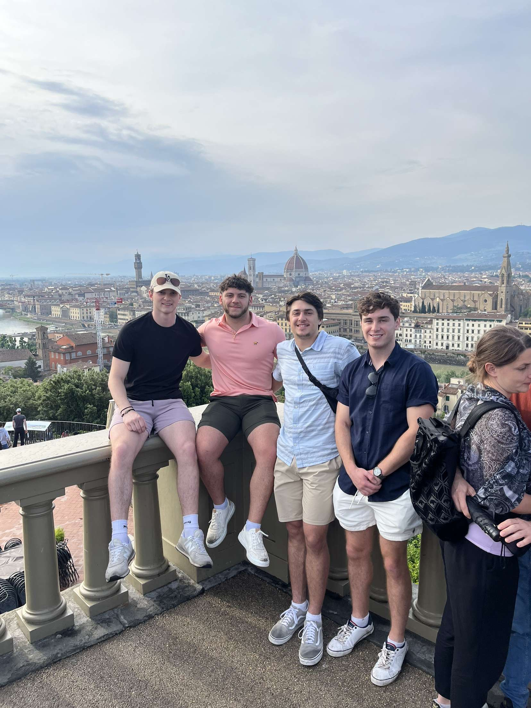
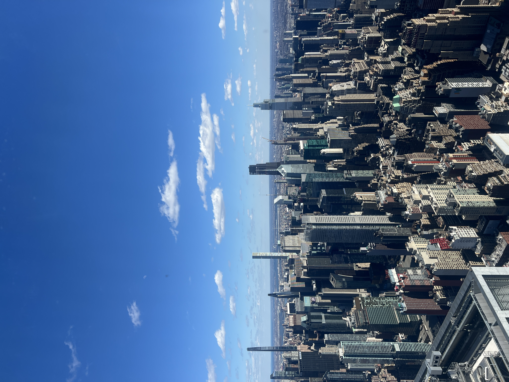
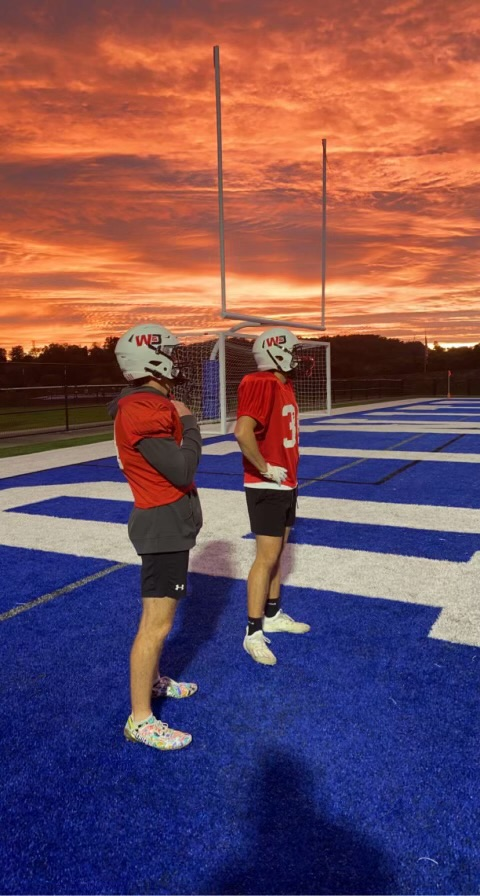
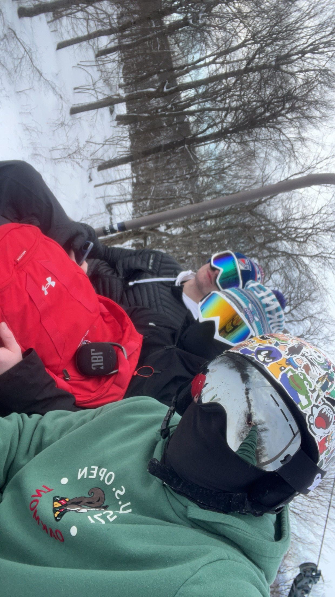
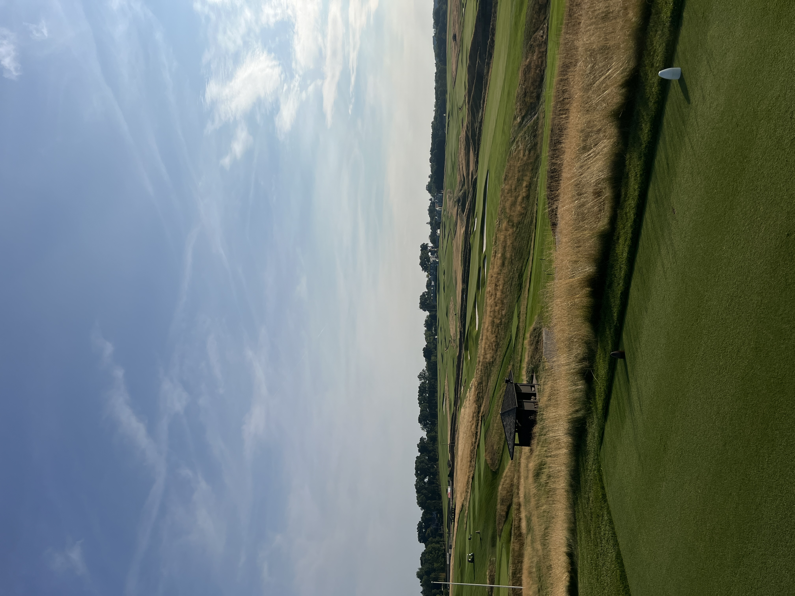
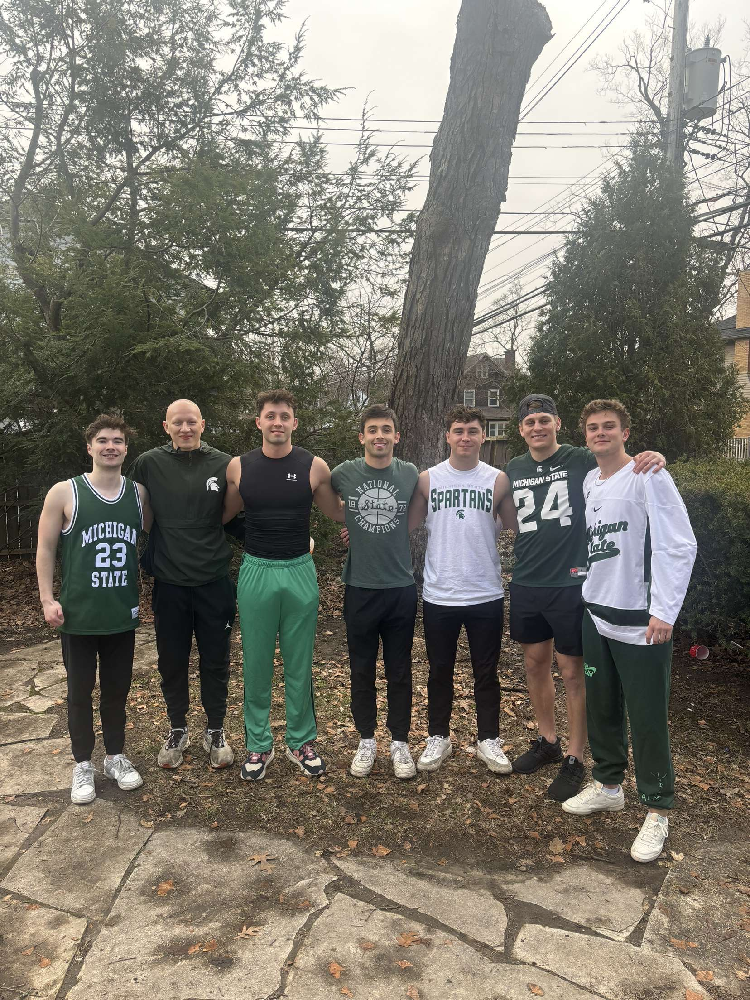
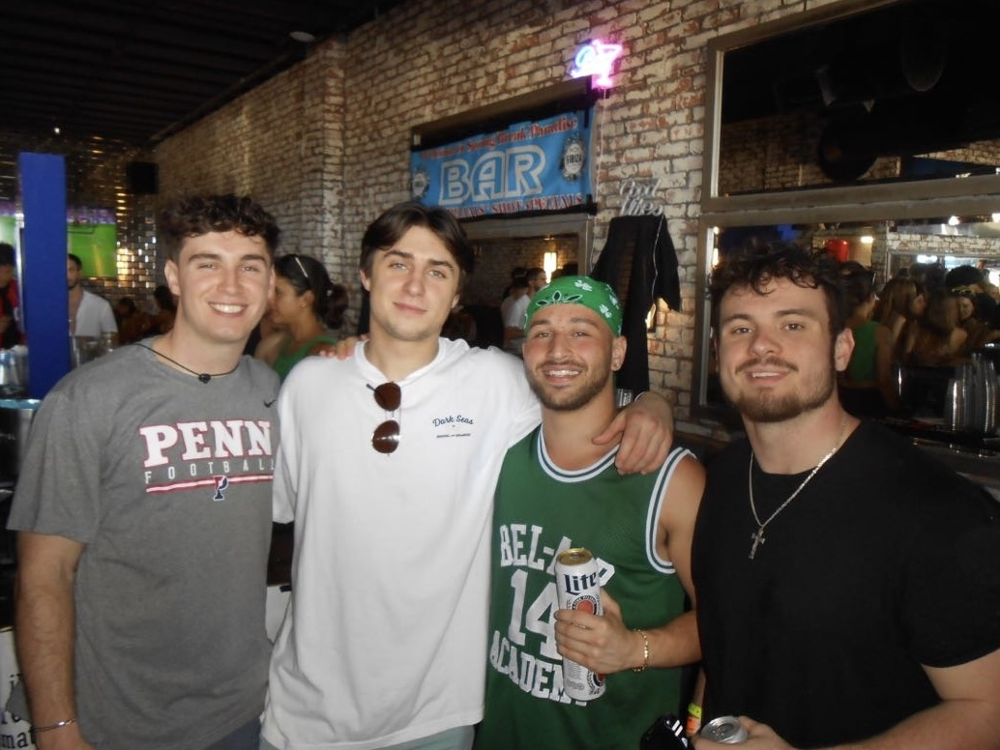

Travel Adventures
I enjoy traveling and experiencing new places, whether that means exploring historic cities, taking in great views, or making memories with friends. Traveling gives me the chance to reset, stay curious, and appreciate different cultures and environments.



Football Life
Playing varsity football at Washington & Jefferson was one of the most meaningful parts of my college experience. It taught me discipline, resilience, and how to work toward a common goal with a team. The lessons I gained from football still shape how I approach challenges in academics, work, and life.


Outdoor Sports
Skiing, golfing, and staying active are some of my favorite ways to spend time outside. I enjoy the mix of competition, focus, and fun that comes with both sports, and they are a great balance to the structure of work and school.


Friends & Memories
Some of my best memories come from time spent with close friends, whether that is during trips, weekends together, or everyday moments. Those relationships have been a big part of my college experience and the life I am building beyond it.

